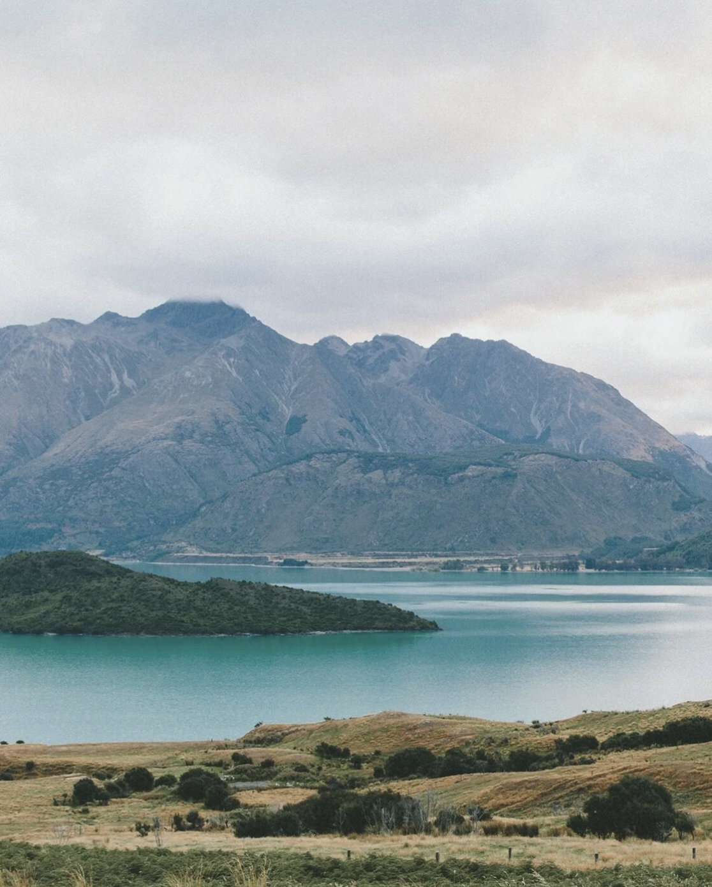

I'm Danielle.
Founder of cliveRd. I have been fascinated by the intersection of art and technology since I can remember.
cliveRd. supports storytellers and deeptech founders to imagine a different, more empathetic tomorrow and then build it. Having only started in '23 we have produced two proof of concept shorts (2 more loading), launched a pitch competition for diverse storytellers and invested and advised several technology companies building a unique future.
——————
- Example projects : "God Sleeps on Sundays" and "The Wait"
- Example technologists we've supported: Tracer, Persimmon Systems, and Mozilla Foundation's climate incubator (Code Carbon, Proyecto Respira, EyeClimate)
More soon!
